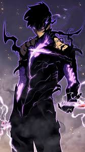

|  | BIOGRAFIA |
|---|---|
|
Sung Jin-Woo é o protagonista de "Solo Leveling", inicialmente conhecido como o "caçador mais fraco da humanidade". Após sobreviver a uma masmorra mortal de rank duplo, ele obtém o poder único de "levelar" como em um RPG, tornando-se progressivamente mais forte sem limites. Transformando-se no Monarca das Sombras, Jin-Woo adquire a capacidade de extrair sombras de inimigos derrotados e comandá-las como soldados leais. Sua jornada o leva de um caçador rank E desprezado ao ser mais poderoso da humanidade, enfrentando outros Monarcas e Soberanos em uma guerra cósmica. Determinado, estratégico e protetor daqueles que ama, ele carrega o peso de proteger toda a humanidade.
| |
| ARMAS | |
|
Adaga do Rei Demônio de Sangue: Arma lendária que drena vida dos inimigos e aumenta seus atributos. Adaga de Barahak: Lâmina mágica que pode cortar através de defesas mágicas. Sistema de Jogador: Interface única que permite crescimento ilimitado, missões diárias e acesso a lojas especiais. | |
| Habilidades | |
|
Extração de Sombras: Pode transformar inimigos mortos em soldados sombrios leais, comandando um exército imortal de dezenas de milhares. Domínio do Monarca: Libera pressão avassaladora que paralisa inimigos mais fracos e aumenta drasticamente seus atributos. Velocidade Sobre-humana: Capaz de se mover mais rápido que a percepção humana. |